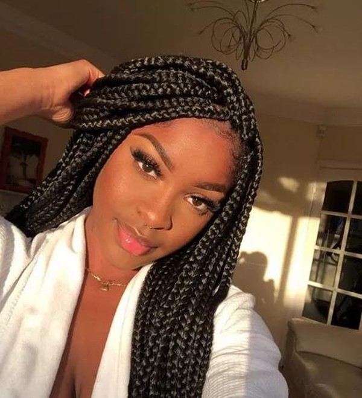

Desde pequena Patricia, descobriu um amor especial por tranças. Cada fio trançado é uma forma de expressão, uma conexão com suas raízes e com a arte que carrega no coração.
Com suas tranças, ela transmite personalidade, força e delicadeza, mostrando ao mundo que cada fio conta uma história única.
